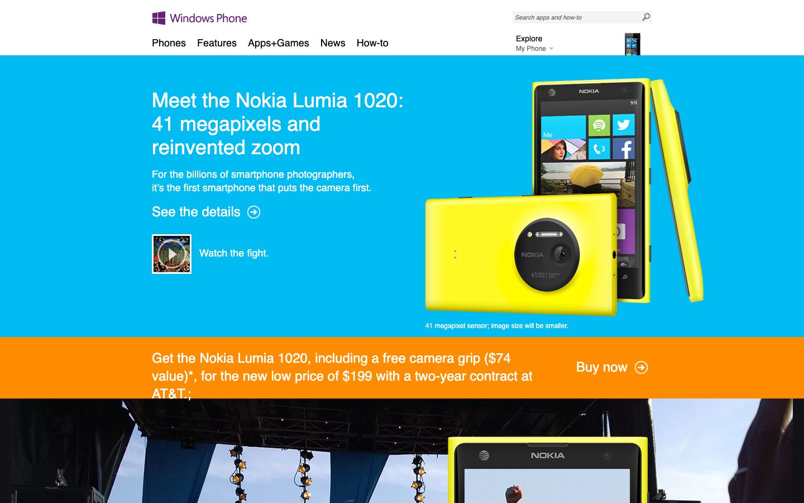

References / Website / 392
Windows Phone website, 2013
Full-width bands of cyan and orange with white type, below a white header with the purple Windows Phone mark.
- Source
- windowsphone.com, Windows Phone home page (archived copy)
- Creator
- Microsoft
- Made
- 2013
- Style
- Flat design (agent-proposed, not yet reviewed by a person)
- Moods
- Bright, direct, commercial
- Evidence
- Captured with
tools/capture.mjs(headless Chrome, 1440 × 900) on 28 September 2026 from the Wayback Machine copy of 15 September 2013, and inspected. The screenshot shows the first viewport; the measurement covers up to four screens. Nothing covers the page. Segoe UI is not installed on the capture machine, so text that the archive did not serve as a web font renders in a fallback sans-serif. - Reviewed
- Rights
- Third-party work, stored with credit for commentary. License: unverified. Rights policy
Observed
- A white header holds the purple four-pane Windows Phone mark, plain black navigation words, and a pale gray search field.
- A full-width cyan band holds the headline “Meet the Nokia Lumia 1020: 41 megapixels and reinvented zoom” in white, a short white paragraph, and a “See the details” link with a circled arrow.
- A product photo of two bright yellow phones sits on the cyan band. The phone screen shows square Metro tiles.
- Below it, a full-width orange band carries a white offer line and a “Buy now” link with a circled arrow.
- A concert photograph fills the band below.
Why it belongs
Measured: 63% of screenshot pixels are saturated, in 3 hue groups; 7% of boxes have a 1 px border and none has a shadow or gradient. Large headings measure weight 400.
The page is a plain stack of color bands. The only interactive cue is the circled-arrow glyph after each link.
Borrow
Stack full-width solid bands of different saturated hues, and put white text directly on them without panels or cards.
Measured
Machine-extracted by tools/extract-traits.js on . Full measurement.
- Type families
- Segoe UI (78%), Segoe UI Light (22%)
- Type scale ratio
- 1.33
- Median radius
- 0 px
- Mean chroma
- 0.21
- Palette
- #ffffff 24%
- #00bcf2 15%
- #121115 14%
- #d5d5d5 13%
- #666666 10%
- #f4f4f4 9%
- #ff8c00 6%
- #000000 3%

